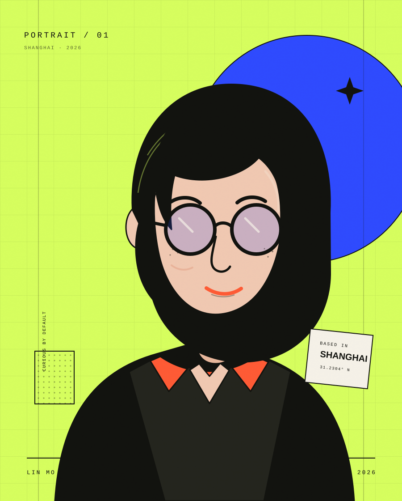

WHAT I DO
从想法到上线，
我负责这一整段。
- 01网页开发响应式 · 高性能 · 可维护
- 02交互体验动效 · 原型 · 可用性
- 03创意技术SVG · Canvas · 数据可视化
PORTFOLIO 2026 — 湖南，中国
你好，我是周志勇 —— 一名前端开发者与交互设计爱好者。 擅长把复杂的逻辑，做成简单、顺手、让人会心一笑的网页体验。

在屏幕与纸张之间，寻找好用的形状。
我是周志勇，常驻湖南永州。过去 5 年，我与产品团队、品牌工作室和独立创作者合作， 把模糊的想法变成清晰、可靠、有余味的数字体验。
我关心一个按钮按下去的反馈，也关心整条信息如何被理解。 代码是我的媒介，好奇心是我的工作方法。
周志勇 / Zhou zy
WHAT I DO
TOOLBOX
工具会变，判断力不会。
NOW / THEN
好设计不是
更多装饰，
而是更少困惑。
— 我的工作原则
2023—2026 的部分项目，包含产品体验、品牌网站与创意实验。 点击卡片，查看背后的思考。
更多项目与过程记录，可以邮件索取。
发一封邮件2026 Q4 档期开放中
无论是一个完整的网站、一次品牌焕新， 还是你还没有想清楚的小实验，都欢迎来信。
通常会在 1—2 个工作日内回复。
DROP ME A LINE
hello@linmo.design目前常驻湖南，可远程协作，也接受线下咖啡局。
回到顶部CASE STUDY 01 / 2025
一张会呼吸的城市夜行地图。为夜间城市探索者重新组织公交、单车与步行信息， 让“怎么去”变成一段可以期待的旅程。
01 / 问题
夜归的人需要在光线不足、注意力有限的情况下快速判断路线。传统地图把公交、单车和步行混在同一层级，重要信息被噪声淹没。
02 / 方法
将路线抽象为发光的流动线条，用速度与亮度区分交通方式；为夜间场景加入低干扰模式，并让关键换乘点在缩放时始终保持可读。
03 / 结果
8 人可用性测试中，主要路线查找任务的平均完成时间缩短 32%。测试参与者更愿意使用“沿途探索”功能，发现路线周边的夜间场所。
CASE STUDY 02 / 2025
一座只属于你的知识花园。用“种植”代替“收藏”，让零散的想法在本地生长、连接， 而不是消失在无限滚动的信息流里。
01 / 问题
市面上的知识工具功能齐全，却容易让人把时间花在整理系统本身。用户需要的是一个低压力的入口，以及一种能看见“积累”的方式。
02 / 方法
以植物生长作为信息可视化隐喻：一条笔记是一株植物，标签是岛屿，连接是藤蔓。数据全部存于浏览器本地，无需注册，打开即可书写。
03 / 结果
无外部依赖的静态实现，首屏渲染约 1.1 秒，Lighthouse 性能得分 96。10 位测试用户中，有 7 位在一周后仍保持每日记录。
CASE STUDY 03 / 2024
如果字体也有声音，它会是什么形状？一个用声波驱动字重、字宽与节奏的可变字体互动实验。
01 / 问题
可变字体让字重、字宽等参数可以连续变化，但大多数网页仍只用它做开关式切换。能否让声音成为字体的一部分？
02 / 方法
通过麦克风采集环境音量与频率，实时映射到字体的字重、字宽和倾斜角度。界面保留键盘操作与可关闭的动效，让实验也能被更多人使用。
03 / 结果
作品在 2 场校园新媒体展览中展出，累计约 300 人次体验。许多参与者第一次直观感受到“可变字体”不只是一个技术名词。
CASE STUDY 04 / 2024
为一家社区咖啡店做的不像“餐饮官网”的官网。用杂志般的叙事、手绘细节和一点点不完美， 还原街角见面的人情味。
01 / 问题
门店有一批稳定的熟客，但线上形象几乎空白。客户希望网站既方便游客了解菜单与营业信息，也能传递店主对社区的感情。
02 / 方法
采用不对称编辑网格与暖棕色系，把咖啡豆来源、店员故事和每日菜单编织在一起。移动端优先处理“地址 / 时间 / 今日豆单”三个高频任务。
03 / 结果
上线三个月后，网站自然访问量稳步增长，线上品牌咨询量提升 27%。店主反馈，有顾客带着网页截图来店里点单。